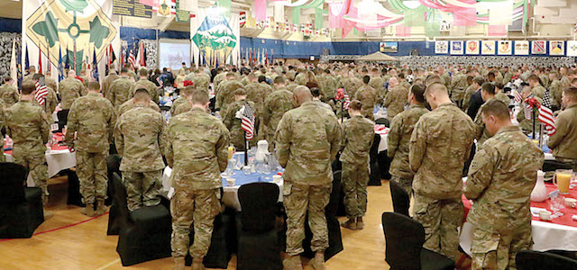

2017-07-26 08:00

In 1905, disgusted by U.S. militarism and jingoism, and American war crimes committed in the Spanish-American and Phillipine-American wars, Mark Twain penned a short story. It was never published in his lifetime – he realized it would never be accepted and feared it would end his career. So the “War Prayer” remained buried in his papers for almost twenty years.
The story is simple: a nation goes to war, as most do, invoking God and flag. There is a church service for soldiers going off to battle. A stranger appears and offers up the ultimate benediction, one that fully expresses the dark side of the nation’s militarism and the demonization of its enemies. All couched in the Word of God.
But, as today, an honest expression of a nation’s primitive and bloody views is a step too far. Twain’s story ends: “It was believed afterward that the man was a lunatic, because there was no sense in what he said.”
This is the stranger’s prayer:
“O Lord our Father, our young patriots, idols of our hearts, go forth to battle — be Thou near them! With them — in spirit — we also go forth from the sweet peace of our beloved firesides to smite the foe. O Lord our God, help us to tear their soldiers to bloody shreds with our shells; help us to cover their smiling fields with the pale forms of their patriot dead; help us to drown the thunder of the guns with the shrieks of their wounded, writhing in pain; help us to lay waste their humble homes with a hurricane of fire; help us to wring the hearts of their unoffending widows with unavailing grief; help us to turn them out roofless with their little children to wander unfriended the wastes of their desolated land in rags and hunger and thirst, sports of the sun flames of summer and the icy winds of winter, broken in spirit, worn with travail, imploring Thee for the refuge of the grave and denied it — for our sakes who adore Thee, Lord, blast their hopes, blight their lives, protract their bitter pilgrimage, make heavy their steps, water their way with their tears, stain the white snow with the blood of their wounded feet! We ask it, in the spirit of love, of Him Who is the Source of Love, and Who is the ever-faithful refuge and friend of all that are sore beset and seek His aid with humble and contrite hearts. Amen.”